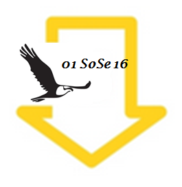

| |
10.07.2017 Ausgabe 14 SoSe 17
Themen
- Rund um die Uni:
- Aktuelles:
- Ausgehen in Stuttgart
- Museum:
- Fotostrecke:
- Kultur:
- Musik: System of a Down
- Film: Das internationale Trickfilmfestival
- Film: Guardians of the Galaxy Vol. 2
- Film: Ghost in the Shell
- Film: In Zeiten des abnehmenden Lichts
- Buchtipp: Sonne und Beton
- Gaming: The Vanishing of Ethan Carter
- Beziehungsweise
- Meine Erfahrungen mit HelloFresh und MarleySpoon
- Das Studentenleben als Familienvater
- Rezept
- Semesterferien im Glas: Der "Blue Splash"
Layout: Kathrin Pape
|
 |
20.04.2017 Ausgabe 13 SoSe 17
Themen
- Rund um die Uni:
- Jenseits von Prüfungen und Fristen
- Studierende erobern den Äther
- Der Studentische Automobilverband e.V.
- Aktuelles:
- Studiengebühren ab dem Wintersemester 2017/2018
- Ausgehen in Stuttgart
- Fotostrecke:
- Eine Serie der Verzweiflung
- Kultur:
- Theater: Shakespeare: Der Sturm
- Musik: Van Holzen - Anomalie
- Kino/Musik: Harry Potter und der Stein der Weisen in concert
- Kino: Logan - The Wolverine
- Kino: Passengers
- Kino: Hidden Figures
- Kino: A Cure for Wellness
- Buchtipp: The Chemist - Die Spezialistin
- Gaming: Die Entwicklung der E-Sport Szene
- Beziehungsweise
- Rezept
Layout: Kathrin Pape
|
|
10.01.2017 Ausgabe 12 WS 16/17
Themen
- Rund um die Uni:
- Lehrer/in als Alternative zur Ingenieurskarriere
- Aktuelles:
- The Election Show
- Kopie statt Download
- Neue BAföG-Regelung ab dem WS 2016/2017
- Ausgehen in Stuttgart
- Fotostrecke:
- Kultur:
- Musik: Poets of the Fall - Clearview
- Kino: Doctor Strange und Terror - Ihr Urteil
- Buchtipp: Trudi Canavan - Die Rebellin
- Gaming: Don't Starve und The Wolf Among Us
- Beziehungsweise
- Askese 2.0: Ein Leben ohne Socialmedia
- Rezept
Layout: Kathrin Pape
|
|
01.10.2016 Ausgabe 11 WS 16/17
Themen
- Rund um die Uni:
- Interview mit der zentralen Studienberatung (ZSB)
- Interview mit der Schreibwerkstatt
- Hochschulgruppe AIAS Stuttgart e.V.
- Etudes Sans Frontières
- Hochschulgruppe Stay
- Aktuelles:
- Apps und Anwendungen, die dein Studium einfacher gestalten
- Wir und die
- Ausgehen in Stuttgart
- Fotostrecke:
- Kultur:
- Musik: The Kills - Ash & Ice
- Kino: Pets und Suicide Squad
- Buchtipp: Dan Brown - Inferno
- Gaming: Pokémon Go
- Beziehungsweise
- Erwachsen nur auf dem Papier?
- Rezept
Layout: Kathrin Pape
|
 |
01.05.2016 Ausgabe 10 SoSe 16
Themen
- Rund um die Uni:
- Kleine und große Helden: KinderHelden Projekt "Ich kann's"
- Aktuelles:
- Studieren und arbeiten: Was muss ich beachten? (Kathrin Pape)
- Mutterschutz im Studium (Tijen Karimani)
- Einfach mal Pause machen: Gap Year (Kathrin Pape)
- Ausgehen in Stuttgart
- Café Galao (Alison Smyth)
- Fotostrecke:
- Streets of Stuttgart (Johannes Giez)
- Kultur:
- Musik: Festivals für Findige (Alison Smyth)
- Musik: Avantasia (Isabell Hellebrandt)
- Kino: Zoomania und The Hateful 8 (Kathrin Pape)
- Buchtipp: Die Kameliendame (Anke Höppner)
- Gaming: Stardew Valley und Deponia Doomsday (Kathrin Pape)
- Beziehungsweise
- Der lange Weg zum Roten Planeten (Fabian Lehnhoff)
- Rezept
- Kokosbananen mit Schokosauce (Anke Höppner)
Layout: Kathrin Pape
|
|
15.01.2016 Ausgabe 09 WS 15/16
Themen
- Rund um die Uni:
- Mehr Sprache im Deutschunterricht (Dominik Schlechtweg)
- Auf und davon - Ein Jahr Erasmus (Dimitra Tsiakalou)
- Aktuelles:
- Was kosten deine Notizen? (Kathrin Pape)
- Skandale in Unternehmen (Kathrin Pape)
- Fair handeln (Kathrin Pape)
- Ausgehen in Stuttgart
- Fasching in Stuttgart (Anke Höppner)
- 0711-Kneipenquartett (Anke Höppner)
- Fotostrecke:
- Fokus Bahn (Johannes Giez)
- Kultur:
- Musik: Adele - Hello (Rosanna Schafheitle)
- Kino/Buchtipp: Er ist wieder da (Rosanna Schafheitle)
- Theater: Achtung, fertig, Impro! (Kathrin Pape)
- Beziehungsweise
- All you need is love (Rosanna Schafheitle)
- Rezept
- Heidelbeer Muffins (Anke Höppner)
Layout: Kathrin Pape
|
| |
12.10.2015 Ausgabe 08 WS 15/16
Themen
- Rund um die Uni:
- Das Referat für Soziales und Beratung stellt sich vor (Iris Zerweck)
- Studierendenparlament versucht Schlichtungskommission faktisch abzuschaffen (Dominik Schlechtweg)
- Neue Studiengänge an der Universität Stuttgart (Kathrin Pape)
- Aktuelles:
- Das Jugendrotkreuz sucht Verstärkung (Kathrin Pape)
- Flüchtlinge und Studierende (Kathrin Pape)
- Ausgehen in Stuttgart
- Kostbar und Konditorei & Café Piroschka (Anke Höppner)
- Fotostrecke:
- Blütenpracht im Höhenpark Killesberg (Sandra Bauer)
- Kultur:
- Musik: So war WACKEN 2015 (Isabell Hellebrandt)
- Musik: Deine Gewalt ist nur ein stummer Schrei nach Liebe ... (Rosanna Schafheitle)
- Kino und Film: Fack Ju Göhte 2 (Rosanna Schafheitle)
- Buchtipp: Krieg und Frieden (Anke Höppner)
- Stadtführer: Endlich Stuttgart (Anke Höppner)
- Gaming
- Kholat und Until Dawn (Isabell Hellebrandt)
- Rezept
- Kirsch-Nester-Kuchen (Lara Maaß)
Layout: Kathrin Pape und Dimitra Tsiakalou
|
| |
05.07.2015 Ausgabe 07 SoSe 15
Themen
- Rund um die Uni:
- Studieren ohne Grenzen e.V. (Sandra Bauer)
- Aktuelles:
- Bahnstreik (Kathrin Pape)
- Hochschulsport:
- Outdoor-Wochenende in Schweden (Dimitra Tsiakalou)
- Ausgehen in Stuttgart
- 8 Days A Week und Fischlabor (Anke Höppner)
- Fotostrecke:
- Sommerbilder Stuttgart (Sandra Bauer)
- Kultur:
- Stuttgart-Festival (Dimitra Tsiakalou)
- Kino: Katakomben und Spy (Dimitra Tsiakalou)
- Buchtipp: Christiane F. (Rosanna Schafheitle)
- Musik: Nightwish (Rosanna Schafheitle)
- Beziehungsweise
- Jobsharing: Ein Job, zwei Bewerber (Kathrin Pape)
Layout: Dimitra Tsiakalou
|
| |
31.03.2015 Ausgabe 06 SoSe 15
Themen
- Rund um die Uni:
- Der Debattierclub e.V. stellt sich vor (Irene Ternes)
- Aktuelles:
- Mindestlohn (Kathrin Pape)
- Was will Pegida? (Katja Franke)
- Hochschulsport:
- Ausgehen in Stuttgart
- Café Moulu und Ciba Mato (Anke Höppner)
- Fotostrecke:
- Stuttgart Nord / Killesberg (Isabell Hellebrandt)
- Kultur:
- Sziget-Festival (Tobi Corucle)
- Kino (Dimitra Tsiakalou und Isabell Hellebrandt)
- Film: Metropolis (Hans-Heinrich Schumann)
- Buchtipp: Der Menschenmacher (Isabell Hellebrandt)
- Buchtipp: Wem die Deutschstunde schlägt - inkl. Interview mit der Autorin Angelika Bohn (Rosanna Schafheitle)
- Musik (Dimitra Tsiakalou und Isabell Hellebrandt)
- Rezept:
- Fladenbrot (Katja Franke)
- Beziehungsweise
- Matriarchate und Frauenquote (Rosanna Schafheitle)
Layout: Dimitra Tsiakalou
|